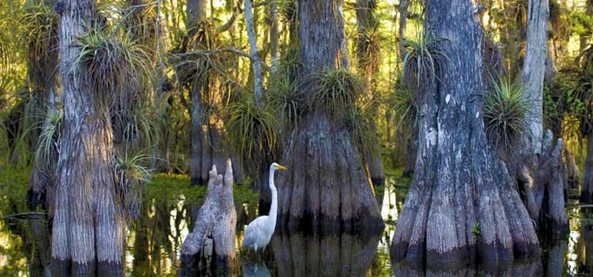
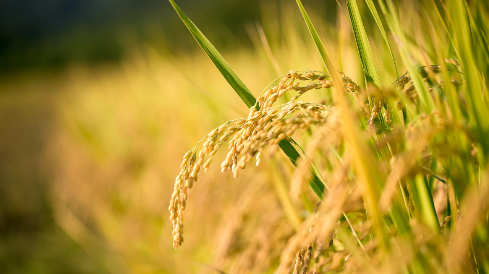

.jpg)
Environment and biodiversity are sometimes used interchangeably. It’s not wrong at all but environment is just a venue while biodiversity is the community. Doesn’t make sense? For example, a village. A village the place and the people, the culture, the connection, and the society there is the residents. Environment is like the village, the place, and biodiversity is the residents, or the inhabitants. So, in short, environment is the place where biodiversity is supposed to be. This topic talks about the biodiversity and how it affects a healthy society.
Since I first went to school and hear the word “Biodiversity”, I always think of wildlife and forest. What I don’t see is that biodiversity is the balance between the living and non-living things in nature. Non-living things contributes to the biodiversity and sometimes, the presence or absence of a non-living thing can make or break the ecosystem in that biome.

This may not be that big deal, right? They mind their own business in the wild and we mind ours in the cities. Well, that’s fine if that’s the case. Unfortunately, that’s not how it goes. People often perform illegal logging, and haunt endangered animals and sell it at a high cost in the black market. That’s not something to be silent for because it distorts the balance in the ecosystem. A species of animal if removed from the biome can cause big changes such as increasing of pest population, extinction chain reaction and a lot more.
That is not good either for us or our children. First, they will not anymore see those type of creatures anymore because they went extinct. Since wild predators don’t have home to live in anymore, they migrate to suburban areas to stay. This causes reported cases of snake invasion, crocodile-on-pool attack, and even bear attacks. Because they have no place to go, they roam and find themselves wandering on other people’s lawn.
In the Philippines, the only thing we can be worried about is the increase of pest population in relation to effects to society. Other than that, more issues are about marine concerns. Garbage can pollute waters and destroy water habitats. Illegal type of fishing is mostly observed in suburban areas. They use the method electric fishing which uses DC battery converted to AC and electrocutes the fish. This is not good because fry and fingerlings may also die in the process. That may cause decrease in fish population which may put food security at risk.
We may not see the actual effect of biodiversity to the society so instant. But in a larger scale, we can see that even we live in cities, we still depend on nature and the goodness it has. Because to admit it or not, we are part of this biodiversity.
Genetically Modified Organisms: Science, Health and Politics
Genetically modified organisms are actual species of plant or animal with genetic arrangement edited. There are parts of the DNA that is modified so that a plant or an animal will have special features like more grains of rice per plant, or faster growth in animals.

Though other people are too concerned about this, this is not bad. In fact, there is no yet reported cases that a man suffered from what-so-ever because of consuming a product known to be a GMO. GMO are planted naturally on the grown. So, it counts as natural. Not only that, but GM crops are also climate resilient and yields more than regular plants.
Although GMO has a lot of ethical concerns, there is no doubt that we take GMO on a regular basis. That is why GMOs are not that big of a threat in the society. Anyway, there is FDA that regulates and check that the food sold in the market is fresh and safe.